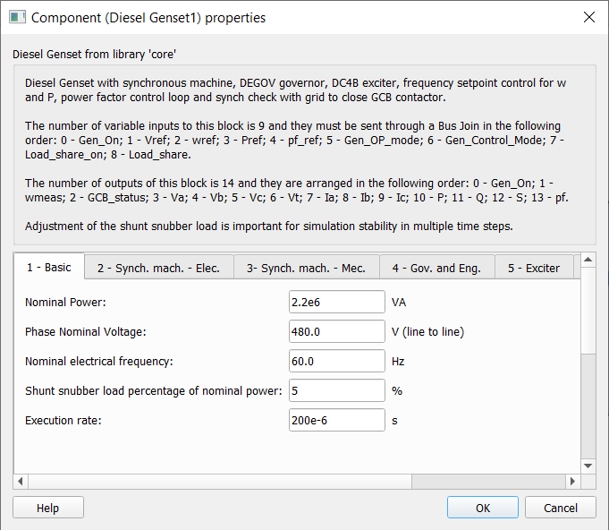
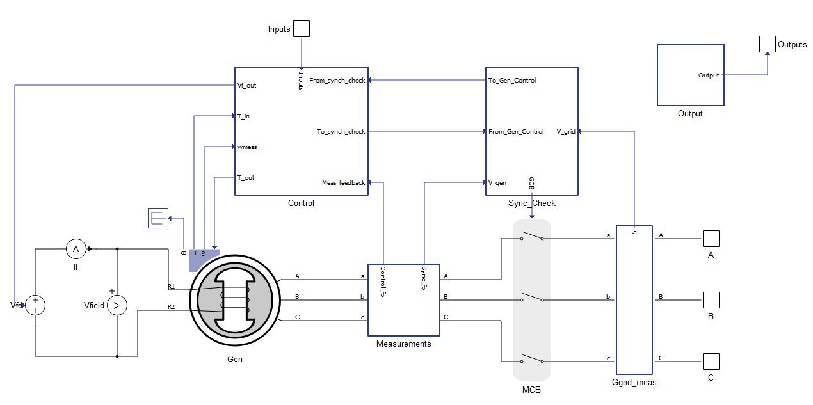
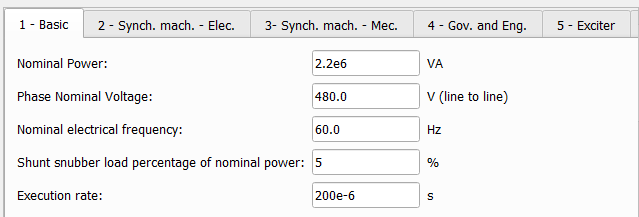
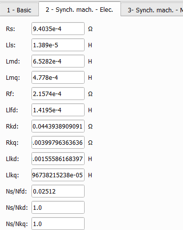
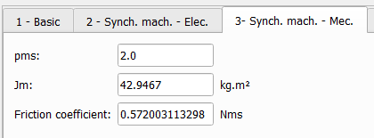
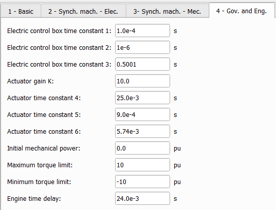
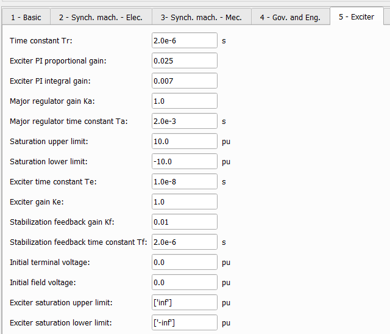
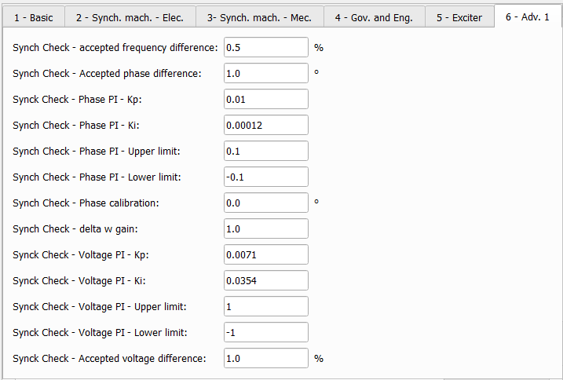
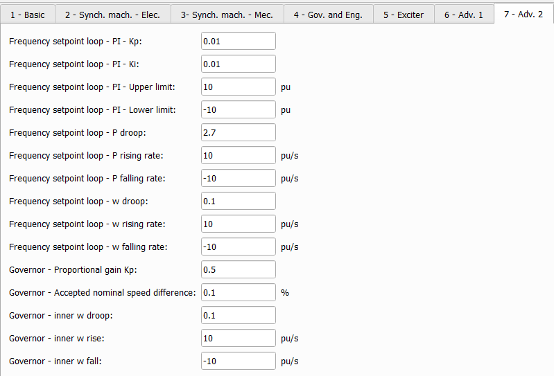
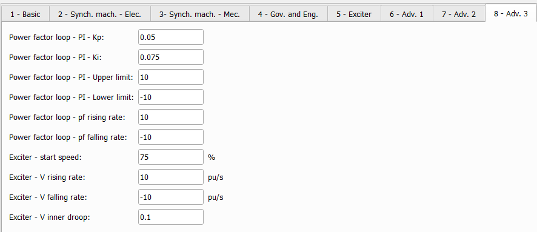

Diesel Genset
Description of the legacy Diesel Genset component, implemented as a synchronous machine with speed and voltage control done through a governor and an exciter respectively.
The Schematic Editor library block from the Microgrid section shown in Table 1, models a diesel generator implemented as a synchronous machine with speed and voltage control done through a governor and an exciter respectively. Active and reactive power are controlled through secondary control loops that add offset bias to speed and voltage references. The Diesel Genset can disconnect from the grid through its controlled circuit breaker and reconnect by synching to the grid. The following sections describe in more details the component parameters, inputs and outputs.
| component | component dialog window | component parameters |
|---|---|---|
 Diesel Genset |
 |
|

Inputs and outputs
The Diesel Genset component needs 9 inputs to operate. These inputs must be sent as an array, with use of a Bus Join component, and in the correct order. Table 2 describes the inputs and their order.
| Number | Input | Description |
|---|---|---|
| 0 | Gen_on | A digital input that turns the generator on/off. Generator is on with a high input. |
| 1 | Vref | An analog input that sets the machine's terminal voltage reference in per unit, where 1.0 is the nominal voltage defined in the component's mask. |
| 2 | wref | An analog input that sets the machine's mechanical speed reference in per unit, where 1.0 is the nominal mechanical speed defined in the component's mask through the nominal electrical frequency and number of pole pairs. |
| 3 | Pref | An analog input that sets the machine's active power output in per unit, where 1.0 is the nominal power defined in the component's mask. |
| 4 | pf_ref | An analog input that defines the machine's reactive power output based on the power factor reference. |
| 5 | Gen_OP_mode | A three-level input that defines the generator operation mode:
|
| 6 | Gen_Control_mode | A three-level input that defines the generator control mode:
|
| 7 | Load_share_on | A digital input that turns the load share function on/off. The load share function is on with a high input. |
| 8 | Load_share | An analog input that offsets the speed bias calculated by the frequency setpoint control loop, this changes the machine's active power output. |
The Diesel Genset has 14 outputs. They are organized as an array and can be accessed individually through a Bus Split component, respecting the correct order. Table 3 describes the outputs and their order.
| Number | Output | Description |
|---|---|---|
| 0 | Gen_On | A digital output with a feedback of the generator on/off state. Generator is on when output is high. |
| 1 | wmeas | An analog output with the measured mechanical speed. [rad/s] |
| 2 | GCB_status | A digital output with a feedback of the circuit breaker on/off state. Circuit breaker is closed when the output is high. |
| 3 | Va | An analog output with the instantaneous measurement of the machine's phase A terminal voltage. [V] |
| 4 | Vb | An analog output with the instantaneous measurement of the machine's phase B terminal voltage. [V] |
| 5 | Vc | An analog output with the instantaneous measurement of the machine's phase C terminal voltage. [V] |
| 6 | Vt | An analog output with the machine's terminal peak voltage (phase to neutral). [V]; The RMS voltage can be calculated by dividing this output by a square root of 2. |
| 7 | Ia | An analog output with the instantaneous measurement of the machine's phase A terminal current. [A] |
| 8 | Ib | An analog output with the instantaneous measurement of the machine's phase B terminal current. [A] |
| 9 | Ic | An analog output with the instantaneous measurement of the machine's phase C terminal current. [A] |
| 10 | P | An analog output with the machine's active power measurement. [W] |
| 11 | Q | An analog output with the machine's reactive power measurement. [VAr] |
| 12 | S | An analog output with the machine's apparent power measurement. [VA] |
| 13 | pf | An analog output with the machine's power factor measurement. |
Component dialog box and parameters
The Diesel Genset component dialogue box consists of eight tabs for specifying basic and advanced parameters.
Tab: "1 - Basic"
In this component tab, you can specify basic parameters of the Diesel Genset.

| Parameter | Code name | Description |
|---|---|---|
| Nominal power | Sb | Diesel Genset nominal power. [VA] |
| Phase nominal voltage | Vn | Diesel Genset nominal line to line terminal voltage. [V] |
| Nominal electrical frequency | f | Diesel Genset nominal electrical frequency. [Hz] |
| Shunt snubber load percentage of nominal power | load | Percentage of the nominal power to be added to a resistive shunt load connected to the terminals of the machine. [%]; Adjustment of this value can contribute to simulation stability. |
| Execution rate | Ts | Execution rate of all signal processing components of the diesel genset. [s] |
Tab: "2 - Synch, Mach. - Elec."
In this component tab, you can specify electrical parameters of the synchronous machine used in the Diesel Genset.

| Parameter | Code name | Description |
|---|---|---|
| Rs | Rs | Stator phase resistance. [Ω] |
| Lls | Lls | Stator phase leakage inductance. [H] |
| Lmd | Lmd | Magnetizing inductance in d-axis. [H] |
| Lmq | Lmq | Magnetizing inductance in q-axis. [H] |
| Rf | Rf_prime | Field winding resistance. [Ω]; value referred to the stator. |
| Llfd | Llfd_prime | Field winding leakage inductance in q-axis. [H]; value referred to the stator. |
| Rkd | Rkd | d-axis damper winding resistance. [Ω]; value referred to the stator. |
| Rkq | Rkq | q-axis damper winding resistance. [Ω]; value referred to the stator. |
| Llkd | Llkd | Damper phase winding leakage inductance in d-axis. [H]; value referred to the stator. |
| Llkq | Llkq | Damper phase winding leakage inductance in q-axis. [H]; value referred to the stator. |
| Ns/Nfd | Ns_Nfd | Turns ratio between stator phase winding and field winding; used for referring field winding variables to the stator. |
| Ns/Nkd | Ns_Nkd | Turns ration between stator phase winding and d-axis damper winding; used for referring damper winding variables to the stator. |
| Ns/Nkq | Ns_Nkq | Turns ratio between stator phase winding and q-axis damper winding; used for referring damper winding variables to the stator. |
Tab: "3 - Synch. Mach. - Mec."
In this component tab, you can specify mechanical parameters of the synchronous machine used in the Diesel Genset.

| Parameter | Code name | Description |
|---|---|---|
| pms | pms | Synchronous machine number of pole pairs. |
| Jm | J | Combined rotor and load moment of inertia. [Kg.m²] |
| Friction coefficient | F | Synchronous machine viscous friction coefficient. [Nms] |
Tab: "4 - Gov. and Eng."
In this component tab, you can specify parameters for the governor and engine used in the Diesel Genset. The governor and engine are implemented with Woodward's DEGOV model.

| Parameter | Code name | Description |
|---|---|---|
| Electric control box time constant 1 | T1 | Governor's electric control box time constant T1. [s] |
| Electric control box time constant 2 | T2 | Governor's electric control box time constant T2. [s] |
| Electric control box time constant 3 | T3 | Governor's electric control box time constant T3. [s] |
| Actuator gain K | k | Governor's actuator gain K. |
| Actuator time constat 4 | T4 | Governor's actuator time constant T4. [s] |
| Actuator time constant 5 | T5 | Governor's actuator time constant T5. [s] |
| Actuator time constant 6 | T6 | Governor's actuator time constant T6. [s] |
| Initial mechanical power | Pm0 | Governor's initial mechanical power output. [p.u.] |
| Maximum torque limit | Tmax | Governor's maximum torque output. [p.u.] |
| Minimum torque limit | Tmin | Governor's minumum torque output. [p.u.] |
| Engine time delay | Td | Engine's time delay. [s] |
Tab: "5 - Exciter"
In this component tab, you can specify parameters for the exciter used in the Diesel Genset. The exciter is implemented with IEEE's DC4B model.

| Parameter | Code name | Description |
|---|---|---|
| Time constant Tr | Tr | Transducer time constant Tr. [s] |
| Exciter PI proportional gain | exc_Kp | Exciter's regulator PI controller proportional gain Kp. |
| Exciter PI integral gain | exc_Ki | Exciter's regulator PI controller integral gain Ki. |
| Major regulator gain Ka | Ka | Exciter's regulator output gain Ka. |
| Major regulator time constant Ta | Ta | Exciter's regulator output time constant Ta. [s] |
| Saturation upper limit | Vrmax | Exciter's regulator maximum voltage output. [p.u.] |
| Saturation lower limit | Vrmin | Exciter's regulator minimum voltage output. [p.u.] |
| Exciter time constant Te | Te | Exciter field time constant Te. [s] |
| Exciter gain Ke | Ke | Exciter field proportional constant Ke. |
| Stabilization feedback gain Kf | Kf | Exciter rate feedback gain Kf. |
| Stabilization feedback time constant Tf. | Tf | Exciter rate feedback time constant Tf. [s] |
| Initial terminal voltage | Vt0 | Exciter initial terminal voltage input. [p.u.] |
| Initial field voltage | Vf0 | Exciter initial field voltage output. [p.u.] |
| Exciter saturation upper limit | Efmax | Exciter maximum output voltage. [p.u.] |
| Exciter saturation lower limit | Efmin | Exciter minimum output voltage. [p.u.] |
Tab: "6 - Adv. 1"
In this component tab, you can specify advanced parameters for the synch check control used in the Diesel Genset.

| Parameter | Code name | Description |
|---|---|---|
| Synch Check - accepted frequency difference | delta_f | Accepted electrical frequency difference between generator and grid to close the main contactor. [%] |
| Synch Check - accepted phase difference | delta_phi | Accepted phase difference between generator and grid to close the main contactor. [degrees] |
| Synch Check - Phase PI - Kp | phase_Kp | Phase match PI controller proportional gain Kp. |
| Synch Check - Phase PI - Ki | phase_Ki | Phase match PI controller integral gain Ki. |
| Synch Check - Phase PI - Upper limit | phase_upLim | Phase match PI controller maximum output. |
| Synch Check - Phase PI -Lower limit | phase_lowLim | Phase match PI controller minimum output. |
| Synch Check - Phase calibration | phaseOff | Phase offset input to synchronize both grid and generator PLLs. [degrees]; To calibrate correctly, let the Diesel Genset connect to the grid and measure the phase difference at that moment. Set the opposite of that value as the offset. |
| Synch Check - delta w gain | dw_K | Synching speed bias output proportional gain Kp. |
| Synch Check - Voltage PI - Kp | V_Kp | Voltage match PI controller proportional gain Kp. |
| Synch Check - Voltage PI - Ki | V_Ki | Voltage match PI controller integral gain Ki. |
| Synch Check - Voltage PI - Upper limit | V_upLim | Voltage match PI controller maximum output |
| Synch Check - Voltage PI - Lower limit | V_lowLim | Voltage match PI controller minimum output. |
| Synch Check - Accepted voltage difference | delta_V | Accepted voltage difference between generator and grid to close main contactor. [%] |
Tab: "7 - Adv. 2"
In this component tab, you can specify advanced parameters for the frequency setpoint control and governor inputs used in the Diesel Genset. The frequency setpoint control can operate in both frequency droop or active power control mode.

| Parameter | Code name | Description |
|---|---|---|
| Frequency setpoint loop - PI -Kp | w_sp_Kp | Frequency setpoint PI controller proportional gain Kp. |
| Frequency setpoint loop - PI - Ki | w_sp_Ki | Frequency setpoint PI controller integral gain Ki. |
| Frequency setpoint loop - PI - Upper limit | w_sp_upLim | Frequency setpoint PI controller maximum output. [p.u.] |
| Frequency setpoint loop - PI - Lower limit | w_sp_lowLim | Frequency setpoint PI controller minimum output. [p.u.] |
| Frequency setpoint loop - P droop | P_droop | Frequency setpoint active power droop. |
| Frequency setpoint loop - P rising rate | P_rise | Frequency setpoint active power reference rising rate. [p.u./s] |
| Frequency setpoint loop - P falling rate | P_fall | Frequency setpoint active power reference falling rate. [p.u./s] |
| Frequency setpoint loop - w droop | w_droop | Frequency setpoint speed droop. |
| Frequency setpoint loop - w rising rate | w_rise | Frequency setpoint speed reference rising rate. [p.u./s] |
| Frequency setpoint loop - w falling rate | w_fall | Frequency setpoint speed reference falling rate. [p.u./s] |
| Governor - Accepted nominal speed difference | delta_wn | Accepted speed difference between the actual speed and the nominal speed to start synch check control. [%] |
| Governor - inner w droop | inner_w_droop | Governor inner speed droop. |
| Governor - inner w rise | inner_w_rise | Governor inner speed reference rising rate. [p.u./s] |
| Governor - inner w fall | inner_w_fall | Governor inner speed reference falling rate. [p.u./s] |
Tab: "8 - Adv. 3"
In this component tab, you can specify advanced parameters for the power factor control and exciter inputs used in the Diesel Genset.

| Parameter | Code name | Description |
|---|---|---|
| Power factor loop - PI - Kp | pf_Kp | Power factor PI controller proportional gain Kp. |
| Power factor loop - PI - Ki | pf_Ki | Power factor PI controller integral gain Ki. |
| Power factor loop - PI - Upper limit | pf_upLim | Power factor PI controller maximum output. |
| Power factor loop - PI - Lower limit | pf_lowLim | Power factor PI controller minimum output. |
| Exciter - start speed | exc_dwn | Minimum mechanical speed to start exciter. [%] |
| Exciter - V rising rate | V_rise | Exciter voltage reference rising rate. [p.u./s] |
| Exciter - V falling rate | V_fall | Exciter voltage reference falling rate. [p.u./s] |
| Exciter - V inner droop | V_inner_droop | Exciter inner voltage droop. |
Example
Overall behavior and control methodologies can be better understood with the use of the given Diesel Genset example:
Model name: diesel_genset.tse
SCADA interface: SCADA_Panel.cus
Path: /examples/models/microgrid/diesel_genset/